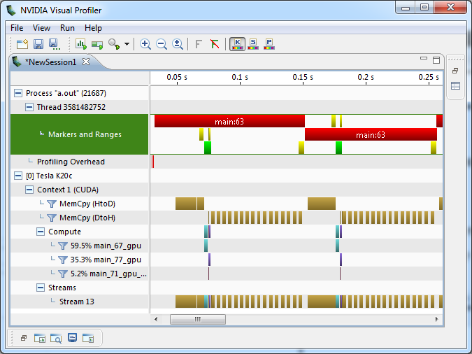

OpenACC-NVTX Library
Author: Jeff Larkin jlarkin@nvidia.com
Description
This library is a proof-of-concept libraray demonstrating how the OpenACC Tools Interface can be used with the NVIDIA Tools Extensions to provide useful information about application performance. It is intended particularly for identifying implicit data motion that occurs in OpenACC regions when data locality has not been explicitly managed by the programmer. This is done by annotating the GPU timeline with NVTX ranges for compute and data constructs. When viewed with nvprof or NVIDIA Visual Profiler the programmer will be able to time specific GPU events, such as PCIe copies or compute kernels, to the OpenACC regions in the code.
Usage
Building the Library
The library can be built with the make command. It has been testing with PGI
15.5 and CUDA 7.0.
Using the Library
To use the library, set the PGI_ACC_PROFLIB environment variable to point to
the full path of the shared object file libaccnvtx.so. Then run the program
using the nvprof command.
$ export PGI_ACC_PROFLIB=$PATH_TO_LIB/libaccnvtx.so
$ nvprof ./a.out
Optionally, you can choose to output a file from nvprof to import into the NVIDIA Visual Profiler.
$ export PGI_ACC_PROFLIB=$PATH_TO_LIB/libaccnvtx.so
$ nvprof -o out.nvp ./a.out
When imported into NVIDIA Visual Profiler data regions (explicit and implicit),
enter and exit data directives, and update directives will use a red range,
compute construct kernels (both the parallel and kernels directives) will
be green, implicit waits will be yellow, and explicit waits will use a purple
range.

Notes
Future versions of the PGI compiler will implement the final tools API from the OpenACC 2.5 spec. The wrappers will be updated at that time.
License
Copyright 2015 NVIDIA Corporation
Licensed under the Apache License, Version 2.0 (the "License"); you may not use this file except in compliance with the License. You may obtain a copy of the License at
http://www.apache.org/licenses/LICENSE-2.0
Unless required by applicable law or agreed to in writing, software distributed under the License is distributed on an "AS IS" BASIS, WITHOUT WARRANTIES OR CONDITIONS OF ANY KIND, either express or implied. See the License for the specific language governing permissions and limitations under the License.